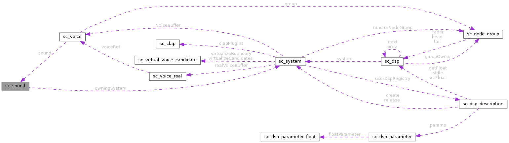

|
Sound Bakery
Open-source audio middleware for games
|
|
Sound Bakery
Open-source audio middleware for games
|
Basic piece of playing audio. More...
#include <sound_chef.h>

Public Attributes | |
| ma_sound | sound |
| sc_sound_mode | mode |
| ma_decoder * | memoryDecoder |
| sc_system * | owningSystem |
Basic piece of playing audio.
sc_sound is currently being deprecated in favour of sc_voice.
Sounds are intended to just be a loaded audio buffer.